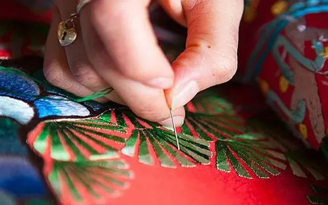

这件作品的灵感，深深植根于源远流长的汉绣文化。汉绣，起于春秋战国时期南方楚地缫丝织锦的繁华，兴于明清时期作为商品绣沿长江水路传播，最终在荆楚大地上形成了以荆州、武汉、洪湖为中心的独特艺术体系。它以其浓墨重彩、装饰性强、寓意吉祥而著称，一针一线间，绣出的不仅是花鸟鱼虫、龙凤祥瑞，更是楚人对生命、对自然的浪漫想象与炽热情感。
我的创作，正是站在这样的巨人肩膀上。香囊本身，便是汉绣文化融入日常生活的经典载体。古人佩香囊，以辟秽防病、寄托情思。我选择制作香囊，意在延续这份古老的实用美学，让传统技艺以一种亲切、可感的方式重回现代人的视野。
